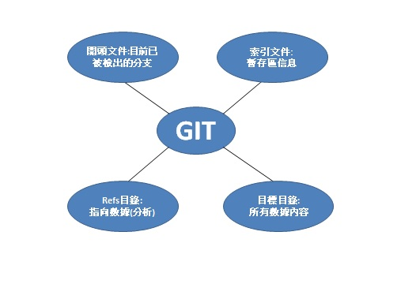

$ cat .git/HEAD
ref: refs/heads/master
執行 git checkout test$ cat .git/HEAD
ref: refs/heads/test
手動編輯此文件，但同樣可以執行更安全的命令:
執行symbolic-ref
$ git symbolic-ref HEAD
refs/heads/master
設置HEAD:$ git symbolic-ref HEAD refs/heads/test
$ cat .git/HEAD
ref: refs/heads/test
.git / config文件中添加遠端origin的名稱，遠程存儲庫的URL以及用於獲取的refspec
[remote "origin"] url = https://github.com/schacon/simplegit-progit fetch = +refs/heads/:refs/remotes/origin/
如果想一次性執行某些操作，也可以在命令行中指定refspec
$ git fetch origin master:refs/remotes/origin/mymaster
指定多個refspec
$ git fetch origin master:refs/remotes/origin/mymaster \ topic:refs/remotes/origin/topic From git@github.com:schacon/simplegit ! [rejected] master -> origin/mymaster (non fast forward) * [new branch] topic -> origin/topic
刪除refspec
git push origin :topic
git push origin -- delete topic
Transfer Protocols--傳輸協議
Git可以透過兩種主要方式在兩個倉儲之間傳輸數據：“啞吧”協議與“智能”協議。本章重點著重於介紹這兩個主要協議的運作方式。
The Dumb Protocol--啞巴協議
該協議稱為“啞巴協議”，是因為它在傳輸過程中不需要服務端的Git特定代碼; 獲取過程是一系列HTTP GET請求，使用者可以自由的呈現Git倉儲的安排。
本章重點在介紹Git內部的維護和數據的恢復，有時Git會自動執行一個名為“auto
當需要恢復檔案時可使用git long和git master兩個指令來進行恢復。
Git在bashshell中運行，並使用許多shell環境變量來確定它的行為方式。
GIT_EXEC_PATH：可透過運行檢查當前設置git --exec-path。
HOME：它是Git查找全局配置文件的地方。
GIT_CONFIG_NOSYSTEM：如果您的系統配置干擾了您的指令，但是您無權更改或刪除它，這將非常有用。
設置提交者的名字: GIT_COMMITTER_NAME
“提交者”字段的電子郵件地址: GIT_COMMITTER_EMAIL
用於“提交者”字段中的日期: GIT_COMMITTER_DATE
功能很強的系統工具-Git
可以輕鬆使用它作為VCS。本章介紹了許多管道指令 - 這些指令使用戶在使用上更家簡單。
git config
該git config命令幾乎已在本書的每一章中使用
在初次設置Git中，我們在開始使用Git之前用它來指定我們的名字，電子郵件地址和編輯器首選項
git init
我們使用此命令在“將空白倉儲放到服務器上”中為服務器創建一個空的空白倉儲。
gitstatus
該git status命令將顯示工作目錄和暫存區域中文件的不同狀態。哪些文件已修改和未分階段，哪些文件已暫存但尚未提交。
在它的正常形式中，它還將向您展示如何在這些階段之間移動文件的一些基本提示。
git diff
當您想要查看任意兩棵樹之間的差異時，將使用該命令。
這可能是您的工作環境和臨時區域（單獨git diff），暫存區域和上次提交（git diff --staged）之間，或兩個提交（git diff master branchB）之間的差異。
只是啟動一個外部工具，以顯示兩棵樹之間的區別，以防您想使用內置git diff命令之外的其他內容。
git reset
主要用於撤消操作，您可以通過動詞來判斷。它在HEAD指針周圍移動並可選地更改index或暫存區域，如果使用，還可以選擇更改工作目錄。
如果使用不當，此最終選項可能會導致此命令丟失，因此請確保在使用之前了解它。
git rm
用於從登台區域和Git的工作目錄中刪除文件。它類似於git add它為下一次提交分階段刪除文件。
是一個簡單的便捷命令，用於移動文件，然後git add在新文件和git rm舊文件上運行。我們只在移動檔案中簡要提一下這個命令。
git mergetool命令只是啟動一個外部合併幫助程序，以防您在Git中遇到合併題。git tag命令用於為代碼歷史記錄中的特定點提供永久書籤。通常，這用於發布容。git fetch命令與遠程存儲庫通信，並獲取該存儲庫中當前不存在的所有信息，並將其存儲在本地數據庫中。git remote命令是用於記錄遠程存儲庫的管理工具。它允許您將長URL保存，例如“origin”，這樣您就不必一直輸出它們。您可以使用其中的幾個，該git remote命令用於添加，更改和刪除它們。git archive命令用於創建項目特定快照的存檔文件。我們git archive用來創建一個項目的tarball，用於在準備釋出一個版本中進行共享。git submodule命令用於管理正常存儲庫中的外部存儲庫。這可能適用於庫或其他類型的共享資源。該submodule命令具有若干子命令（add，update，sync，等），用於管理這些資源。git show命令可以以簡單且可讀的方式顯示Git對象。通常，您可以使用它來顯示有關標記或提交的信息。git shortlog命令用於匯總輸出git log。該命令將採用許多相同的選項，git log但它不會列出所有提交，而是顯示按作者分組的提交的摘要。(有工具可以解決圖形衝突)
外部合併和差異工具
您可以設置一個外部工具，來自動解決圖形衝突，而不必手動解決。
強制視覺合併工具" (P4Merge) 來執行差異和合併解析度, 因為它是一個不錯的圖形工具, 並且是免費的。
Git 屬性資料還允許您在匯出專案存檔時執行一些有趣的操作。
您可以告訴 Git 在生成存檔時不要匯出某些檔或目錄。如果有一個子目錄或檔不希望包含在存檔檔中, 但您確實希望簽入專案, 則可以通過export-ignore確定這些檔。
例如, 假設您在test/子目錄中有一些測試檔案, 而將它們包含在專案的 tarball 匯出中是沒有意義的。您可以將以下行添加到 Git 屬性檔中:
test/ export-ignore
合併策略
您還可以使用 Git 屬性告訴 Git 對專案中的特定檔使用不同的合併策略。一個非常有用的選擇是告訴 Git 不要嘗試合併特定的檔時, 他們有衝突, 而是使用你的一方合併超過別人的。
如果專案中的分支存在分歧或是專用的, 但您希望能夠將更改合併回其中, 並且希望忽略某些檔, 這將很有説明。假設您有一個名為database.xml " 的資料庫設置檔, 該檔在兩個分支中是不同的, 並且您希望在不弄亂資料庫檔案的情況下合併到其他分支中。
教你一些鉤子的用法並告訴妳這些能尬麻? 使用鉤子來檢查提交消息是否符合所需的模式等等…..
前4種掛鉤與提交過程有關
注意: 此腳本無法停止推送過程, 但用戶端在完成之前不會斷開連接, 因此, 如果您嘗試執行任何可能需要很長時間的操作, 請務必小心。
交互式暫存
運行git add時使用-i或者--interactive選項，Git將會進入一個交互式終端模式
$ git add -i
暫存與取消暫存文件
在如果What now>提示符後鍵入2或u，腳本將會提示想要暫存哪個文件
Update>> 1,2
如果在Update>>提示符後不輸入任何東西並直接按回車，Git將會暫存之前選擇的文件
要取消暫存TODO文件，使用3或r（撤消）選項